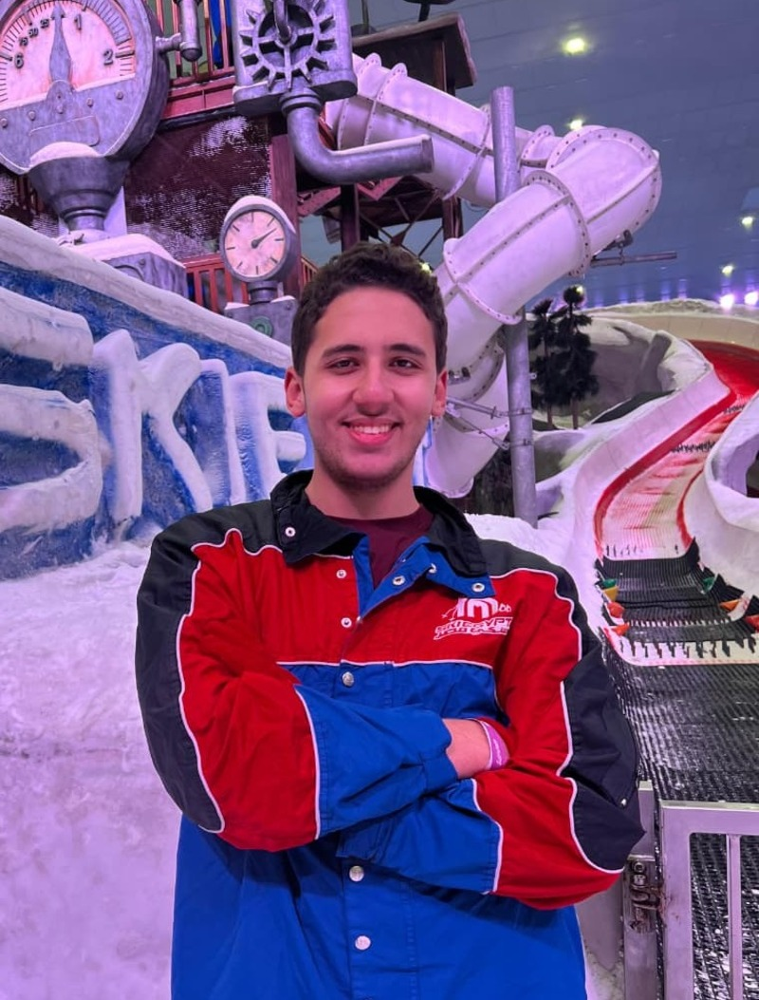

About me
Medical student driven by curiosity and a genuine openness to diverse clinical paths.
I am committed to inclusive, patient-centered care and health equity, and I am drawn to the parts of healthcare that meet human rights, dignity and personal autonomy. I am seeking observerships and training that let me learn from many specialties. [Add two honest lines about yourself here.]


A few honest lines
MBBCh, New Mansoura University, Faculty of Medicine
September 2022
Visual art, writing, Raqs Sharqi, and youth-led health advocacy.
Creative collaborations, research conversations, and clinical observerships.
If you want to wander through what shapes my eye and mood, check out Through My Eyes, Notes, Sans Pardon, or Medicine & Clinical — أو لو حابب نرغي أو نتعاون في حاجة، ابعتلي Say hi على طول.